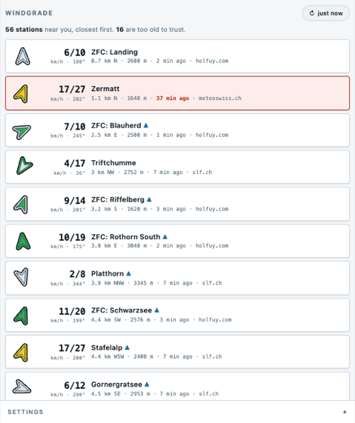
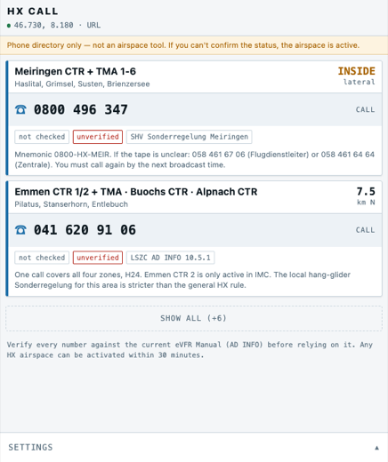

Free, no account, nothing tracked. They run inside XCTrack as a web page widget, or in any browser on their own.
Wind stations near you, drawn where they actually are. Speed, gust and direction for each one — so you can tell a valley-floor reading from a summit reading before you commit to a glide.

Swiss HX airspaces have no fixed hours — they can switch on at 30 minutes’ notice. You are allowed to check by phone, and this finds the right number for wherever you are.

Stays on your phone. Windmap asks winds.mobi which stations are in the area around you, and that is the only thing either tool ever sends. No accounts, no analytics, no tracking.
Unofficial, and no warranty. These show measured facts — not forecasts, and never a verdict on whether a flight is safe. Only the official publications have legal validity, and you are responsible for your own flight preparation.